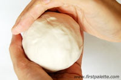
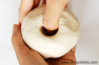
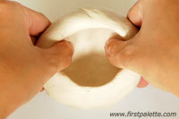
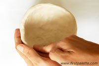
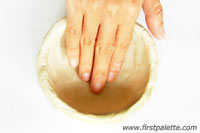
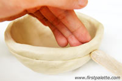
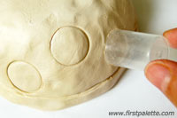
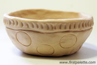
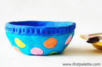
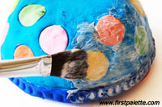

CREATE YOUR OWN PINCH POT
GO BACK to make sure you have the materials ready.
PICTURE REFERENCE |
STEPS |
|---|---|
|  | Step 1. Form a chunk of air dry clay into a ball. |
|  | Step 2. Hold the ball of clay with one hand and use your other thumb to press into the center until your thumb is about 1/4 to 1/2 inch from the bottom. |
|  | Step 3. Slowly widen the hole by pinching up the walls. Turn the piece continously as you pinch to keep the walls even in thickness. |
|  | Step 4. Continue drawing the walls and molding the piece into your desired shape. Make sure that the bottom and the walls are at least 1/4 inch thick. |
|  | Step 5. Flatten the bottom by gently pressing the inside of the piece against a flat surface. |
|  | Step 6. You can create lines, grooves and carve out small details with a craft stick, plastic spoon, toothpick, or plastic clay tools. |  | Step 7. Bottle caps are great for making round patterns. Be careful not to press too hard to avoid deforming the pot. |
|  | Step 8. Allow the bowl or pot to air dry. It normally takes about 2-3 days for a small piece to dry completely. |
|  | Step 9. Once dry, paint your finished work with acrylic paint, tempera, or poster paint. Let the paint dry. |
|  | Step 10. To give it a glazed look and to waterproof your work, apply at least 2 coats of decoupage medium (e.g. Mod Podge) or spray with clear acrylic sealer (with gloss finish) on the entire surface of the pot. Let each coat dry before applying the next one. |
VOILA! Ceramic creation complete!